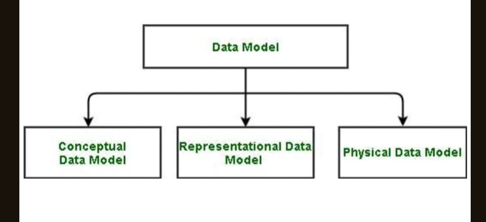
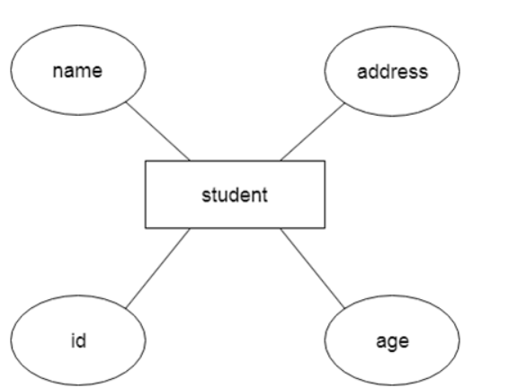
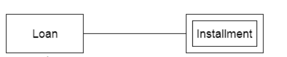
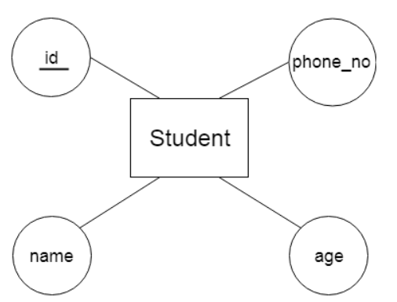
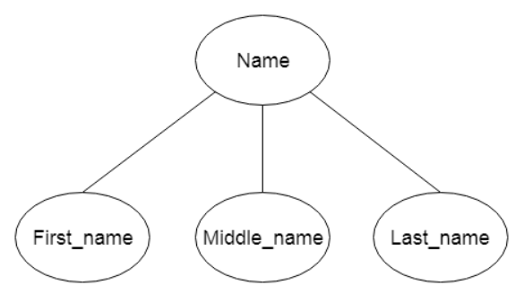
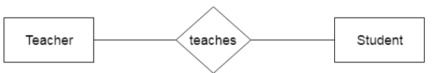
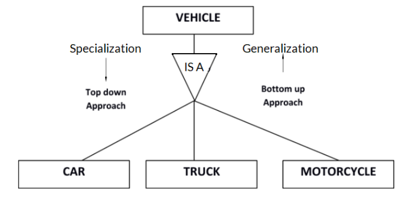
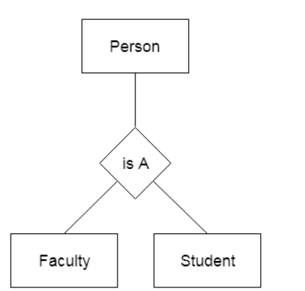

×
semester 3
Computer Network Discrete Mathematics DBMS Operating Systemsemester 4
Comming Soon....semester-3
DBMS stands for Database management system. It is a software facilitating efficient data storage, retrieval and management in database
Ensure data safety and integrity, while offering accessibility and concurrency control.
Advantages of DBMS (Short Notes):-
Database Management Systems (DBMS) are widely applied in various sectors to handle data efficiently. Here are some key applications of DBMS:
Data Independence is mainly defined as a property of DBMS that helps you to change the database schema at one level of a system without requiring to change the schema at the next level. it helps to keep the data separated from all program that makes use of it.
We have namely two levels of data independence arising from these levels of abstracation:Database systems comprise complex data structures. In order to make the system efficient in terms of retrieval of data, and reduce complexity in terms of usability of users, developers use abstraction i.e. hide irrelevant details from the users. This approach simplifies database design.
This is the lowest level of data abstraction. It tells us how the data is actually stored in memory. Access methods like sequential or random access and file organizaƟon methods like B+ trees and hashing are used for the same. Usability, size of memory, and the number of Ɵmes the records are factors that we need to know while designing the database.
Suppose we need to store the details of an employee. Blocks of storage and the amount of memory used for these purposes are kept hidden from the user.
This level comprises the information that is actually stored in the database in the form of tables. It
also stores the relationship among the data entities in relatively simple structures. At this level, the
information available to the user at the view level is unknown.
We can store the various aributes of an employee and relationships, e.g. with the manager can also
be stored.
The logical level thus describes the entire database in terms of a small number of relatively simple
structures. Although implementation of the simple structures at the logical level may involve
complex physical-level structures, the user of the logical level does not need to be aware of this
complexity. This is referred to as physical data independence. Database administrators, who must
decide what information to keep in the database, use the logical level of abstraction.
This is the highest level of abstraction. Only a part of the actual database is viewed by the users. This level exists to ease the accessibility of the database by an individual user. Users view data in the form of rows and columns. Tables and relations are used to store data. Multiple views of the same database may exist. Users can just view the data and interact with the database, storage and implementation details are hidden from them. Even though the logical level uses simpler structures, complexity remains because of the variety of information stored in a large database. Many users of the database system do not need all this information; instead, they need to access only a part of the database. The view level of abstracƟon exists to simplify their interaction with the system
The collection of information stored in the database at a specific moment is known as an instance of the database. It is a snapshot of the database that contains live data at that moment, showing the current state of all records and transactions.
The database schema refers to the overall design of the database, illustrating the logical structure and organization of data. It defines how data is organized and how relationships between data are handled, essentially serving as the blueprint for how the database is constructed.
In a Database Management System (DBMS), different types of database language statements are used to define, manipulate, and manage data. These are categorized into four main types:
DDL statements are used to define and modify the structure of database objects such as tables, indexes, and schemas. Examples include:
DML statements deal with the manipulation of data within database objects. These include:
DCL statements manage access permissions and user controls for the database:
TCL statements manage transactions within a database to ensure data integrity:
A Data Model in Database Management System (DBMS) is the concept of tools that are developed to summarize the description of the database. Data Models provide us with a transparent picture of data which helps us in creating an actual database. It shows us from the design of the data to its proper implementation of data.
Types of Relational ModelsIt is basically classified into 3 types:-
The conceptual data model describes the database at a very high level and is useful to understand the needs or requirements of the database. It is this model, that is used in the requirement-gathering process ie. before the Database Designers start making a particular database. One such popular model is the entity/relationship model (ER model). The E/R model specializes in entities, relationships, and even attributes that are used by database designers. In terms of this concept, a discussion can be made even with non-computer science(non-technical) users and stakeholders, and their requirements can be understood.
Entity-Relationship Model( ER Model):-It is a high-level data model which is used to define the data and the relationships between them. It is basically a conceptual design of any database which is easy to design the view of data.
Components of ER Model:Conceptual data models known as Domain models create a common vocabulary for all stakeholders by establishing basic concepts and scope.
This type of data model is used to represent only the logical part of the database and does not represent the physical structure of the database. The representational data model allows us to focus primarily, on the design part of the database. A popular representational model is a Relational model. The relational Model consists of Relational Algebra and Relational Calculus. In the Relational Model, we basically use tables to represent our data and the relationships between them. It is a theoretical concept whose practical. implementation is done in Physical Data Model.
The advantage of using a Representational data model is to provide a foundation to form the base for the Physical model
The physical Data Model is used to practically implement Relational Data Model. Ultimately, all data in a database is stored physically on a secondary storage device such as dises and tapes. This is stored in the form of files, records, and certain other data structures. It has all the information on the format in which the files are present and the structure of the databases, the presence of external data structures, and their relation to each other. Here, we basically save tables in memory so they can be accessed efficiently. In order to come up with a good physical model, we have to work on the relational model in a better way. Structured Query Language (SQL) is used to practically implement Relational Algebra.
This Data Model describes HOW the system will be implemented using a specific DBMS system. This model is typically created by DBA and developers. The purpose is actual implementation of the database.
The hierarchical Model is one of the oldest models in the data model which was developed by IBM, in the 1950s. In a hierarchical model, data are viewed as a collection of tables, or we can say segments that form a hierarchical relation. In this, the data is organized into a tree-like structure where each record consists of one parent record and many children. Even if the segments are connected as a chain-like structure by logical associations, then the instant structure can be a fan structure with multiple branches. We call the illogical associations as directional associations.
The Network Model was formalized by the Database Task group in the 1960s. This model is the generalization of the hierarchical model. This model can consist of multiple parent segments and these segments are grouped as levels but there exists a logical association between the segments belonging to any level. Mostly, there exists a many-to-many logical association between any of the two segments.
In the Object-Oriented Data Model, data and their relationships are contained in a single structure which is referred to as an object in this data model. In this, real-world problems are represented as objects with different attributes. All objects have multiple relationships between them. Basically, it is a combination of Object Oriented programming and a Relational Database Model.
The float data model basically consists of a two-dimensional array of data models that do not contain any duplicate elements in the array. This data model has one drawback it cannot store a large amount of data that is the tables can not be of large size.
The Context data model is simply a data model which consists of more than one data model. For example, the Context data model consists of ER Model, Object-Oriented Data Model, etc. This model allows users to do more than one thing which each individual data model can do.
Semi-Structured data models deal with the data in a flexible way. Some entities may have extra attributes and some entities may have some missing attributes. Basically, you can represent data here in a flexible way.
ER model stands for an Entity-Relationship model. It is a high-level data model. This model is used to define the data elements and relationship for a specified system.
It develops a conceptual design for the database. It also develops a very simple and easy to design view of data.
In ER modeling, the database structure is portrayed as a diagram called an entity-relationship diagram.
For example, Suppose we design a school database. In this database, the student will be an entity with attributes like address, name, id, age, etc. The address can be another entity with attributes like city, street name, pin code, etc and there will be a relationship between them.
An entity may be any object, class, person or place. In the ER diagram, an entity can be represented as rectangles.
Consider an organization as an example- manager, product, employee, department etc. can be taken as an entity.
An entity that depends on another entity called a weak entity. The weak entity doesn't contain any key attribute of its own. The weak entity is represented by a double rectangle.
The attribute is used to describe the property of an entity. Eclipse is used to represent an attribute.
For example, id, age, contact number, name, etc. can be attributes of a student.

The key attribute is used to represent the main characteristics of an entity. It represents a primary key. The key attribute is represented by an ellipse with the text underlined.
An attribute that composed of many other attributes is known as a composite attribute. The composite attribute is represented by an ellipse, and those ellipses are connected with an ellipse.
An attribute can have more than one value. These attributes are known as a multivalued attribute. The double oval is used to represent multivalued attribute.
For example, a student can have more than one phone number.
An attribute that can be derived from other attribute is known as a derived attribute. It can be represented by a dashed ellipse.
For example, A person's age changes over time and can be derived from another attribute like Date of birth.
A relationship is used to describe the relation between entities. Diamond or rhombus is used to represent the relationship.
Types of relationship are as follows:
a.One-to-One RelationshipWhen only one instance of an entity is associated with the relationship, then it is known as one to one relationship.
For example, A female can marry to one male, and a male can marry to one female.
When only one instance of the entity on the left, and more than one instance of an entity on the right associates with the relationship then this is known as a one-to-many relationship.
For example, Scientist can invent many inventions, but the invention is done by the only specific scientist.
When more than one instance of the entity on the left, and only one instance of an entity on the right associates with the relationship then it is known as a many-to-one relationship.
For example, Student enrolls for only one course, but a course can have many students.
.png)
When more than one instance of the entity on the left, and more than one instance of an entity on the right associates with the relationship then it is known as a many-to-many relationship.
For example, Employee can assign by many projects and project can have many employees.
The Enhanced Entity Relationship Model contains all the features of the Entity Relationship model. In addition to all that, it also contains features of Subclasses, Superclasses and Inheritance.
All of these in detail are as follow-A subclass is a class derived from the superclass. It inherits the properties of the superclass and also contains attributes of its own. An example is:
Car, Truck and Motorcycle are all subclasses of the superclass Vehicle. They all inherit common attributes from vehicle such as speed, colour etc. while they have different attributes also i.e Number of wheels in Car is 4 while in Motorcycle is 2.
SuperclassesA superclass is the class from which many subclasses can be created. The subclasses inherit the characteristics of a superclass. The superclass is also known as the parent class or base class.
In the above example, Vehicle is the Superclass and its subclasses are Car, Truck and Motorcycle.
Inheritance is basically the process of basing a class on another class i.e to build a class on a existing class. The new class contains all the features and functionalities of the old class in addition to its own.
The class which is newly created is known as the subclass or child class and the original class is the parent class or the superclass.
Generalization is like a bottom-up approach in which two or more entities of lower level combine to form a higher level entity if they have some attributes in common.
In generalization, an entity of a higher level can also combine with the entities of the lower level to form a further higher level entity.
Generalization is more like subclass and superclass system, but the only difference is the approach. Generalization uses the bottom-up approach.
In generalization, entities are combined to form a more generalized entity, i.e., subclasses are combined to make a superclass.
For example, Faculty and Student entities can be generalized and create a higher level entity Person. The functional dependency is a relationship that exists between two attributes. It typically exists between the primary key and non-key attribute within a table.
X → YThe left side of FD is known as a determinant, the right side of the production is known as a dependent.
For example:Assume we have an employee table with attributes: Emp_Id, Emp_Name, Emp_Address.
types of function dependencyNormalization is the process of organizing the data in the database.
Normalization is used to minimize the redundancy from a relation or set of relations. It is also used to eliminate undesirable characteristics like Insertion, Update, and Deletion Anomalies.
Normalization divides the larger table into smaller and links them using relationships.
The normal form is used to reduce redundancy from the database table.
The main reason for normalizing the relations is removing these anomalies. Failure to eliminate anomalies leads to data redundancy and can cause data integrity and other problems as the database grows. Normalization consists of a series of guidelines that helps to guide you in creating a good database structure.